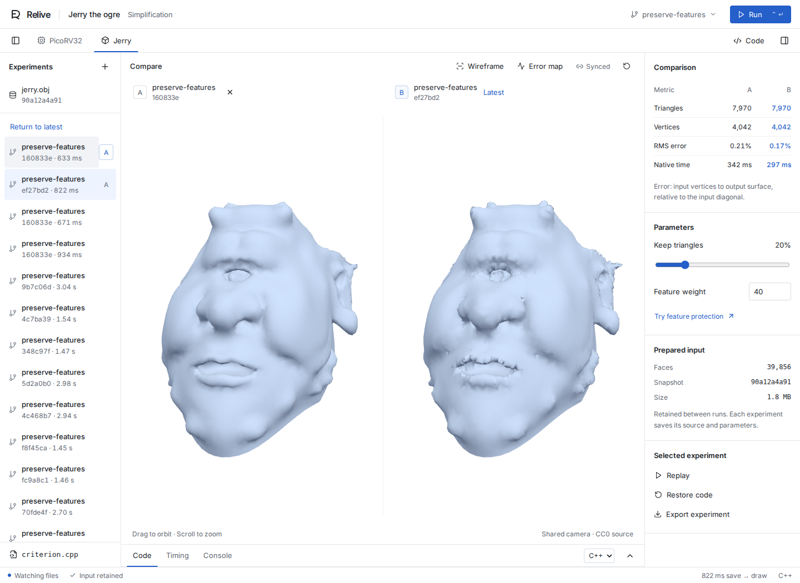

Native algorithm experiments
An interactive workbench for C++ and Rust. Save a function, recompile its native code, and compare the new result on the same prepared data.
These are recorded native experiments. Run Relive locally for live recompilation, synchronized 3D views and branches.

Jerry the ogre by Keenan Crane (CC0). 39,856 input triangles; 7,970 after native libigl simplification. Click the capture for full resolution.
Measured save-to-draw latency
Five edits per mode and example, measured on an i7-8650U laptop with 8 GB RAM. The browser used software rendering. Both modes rebuild the native plugin; the classical cycle also starts a fresh process and prepares the raw input again.
| Example | Relive median | Classic median | Ratio |
|---|---|---|---|
| PicoRV32, C++ | 1,595 ms | 2,239 ms | 1.40× |
| Jerry, C++ | 1,475 ms | 2,936 ms | 1.99× |
| Jerry, Rust | 1,258 ms | 2,958 ms | 2.35× |
Measured on 24 October 2026 under normal desktop load. The end timestamp includes browser acknowledgement after drawing. Data acquisition, synthesis and first-time engine compilation are excluded. These are machine-specific measurements. Method, ranges and memory use · All 30 samples
Run locally
Linux or WSL2 · C++17 · Rust · Python · Node
Inputs are
bundled. Native code runs on your machine.
git clone https://github.com/kennethassogba/relive.git cd relive npm run setup npm run dev